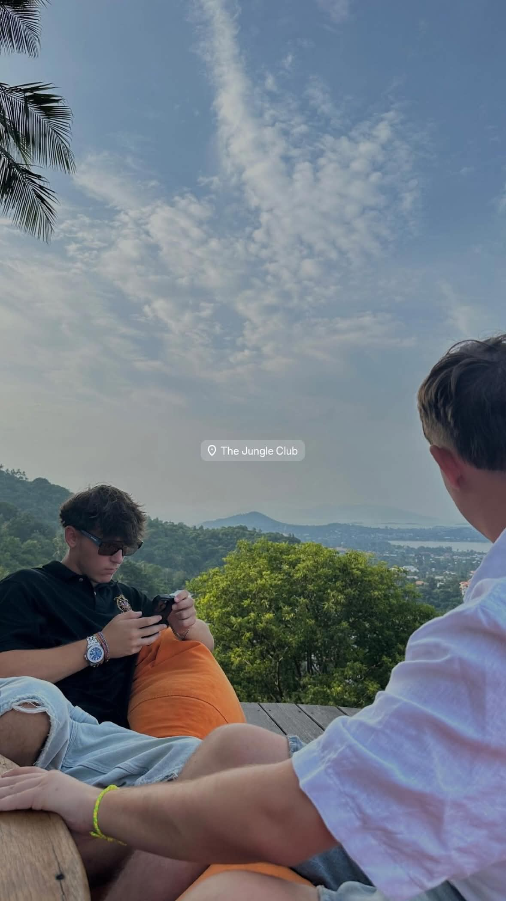

A Slovak ICT student turning a love of puzzles into a future in cybersecurity.
I am a 19-year-old first-year ICT student at HZ University of Applied Sciences in the Netherlands, originally from Slovakia. Outside of school, I enjoy cars, gaming, going to the gym, and video editing. Back home, I also help organize one of the biggest car meets in Slovakia. In the future, I hope to gain experience in the IT industry and work towards a career in cybersecurity.
Originally from Slovakia, currently doing my best not to get taken out by an ebike in Vlissingen. When I'm not rethinking my life choices or staring at code wondering why a single missing bracket ruined my life, you can see what I'm up to in my interests below.